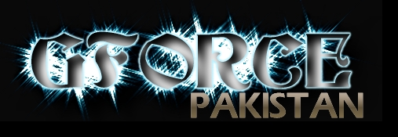

Is the world waits to see the conclusion of the Indian airline hijacking, serious questions are raised about the whole saga.
Information from Kashmir indicates that no Kashmiri group is involved in the hijacking of the Indian airline plane. Furthermore, it has emerged that the involvement and demanded release of a key figure (Maulana Masood Azhar, in an Indian jail since 1994) indicates that this may be an Indian intelligence game being played to discredit the Kashmiri Freedom struggle.
It comes as no surprise that during the Al-Faran saga and the kidnapping of Westerners, who are still missing, the release of the above figure was demanded. No information about Al-Faran has been realised to date and the be-heading of the Norwegian hostage leaves a lot of questions unanswered. Was the Norwegian really killed by Al-Faran? Did he really exist and was he kidnapped at all? Only time will tell.
Is Indian RAW Agent S.B.S. Tomar Behind the Hijacking Drama?
Names of Passengers and Crew on Board Hijacked Indian Airlines Plane
WASHINGTON, DC, USA, December 28, 1999 (Information Times): Pakistan Television (PTV) and Pakistan's Foreign Ministry Spokesman Tariq Altaf have disclosed that S.B.S. Tomar, an agent of India's infamous intelligence agency, Research & Analysis Wing (RAW), is also on board the hijacked Indian Airlines plane and he is guiding, directing and controlling the five or six hijackers.
PTV reported on Tuesday, December 28, 1999 that "According to sources, the RAW agent aboard the hijacked plane is S.B.S. Tomar who is holding the cover post of First Secretary in the Indian Embassy in Kathmandu, Nepal. According to information, this very RAW agent is controlling the entire operation from inside the plane."
"I have just now been told by a reliable source that an Indian RAW agent is on board the aircraft," Pakistan's Foreign Office Spokesman Tariq Altaf told reporters during a news briefing held on Monday, December 27, 1999 in Islamabad. Later, Tariq Altaf told journalists that the name of the Indian RAW spy is: "S.B.S. Tomar."
S.B.S. Tomar, the name of the Indian RAW agent, is definitely on the list of the names of passengers and crew on board hijacked Indian Airlines Flight No. IC-814, which was scheduled to fly from Kathmandu, Nepal to New Delhi, India.
Indian Airlines flight schedule from Kathmandu to New Delhi for Friday, December 24, 1999 was as follows: Flight No. IC 814 (Airbus 300) Departs Kathmandu at 1350, Arrives in New Delhi at 1510 - (Non-Stop Daily Flight - 7 Days a Week) - J-Class Fare = $170, Y-Class Fare = $142.
Indian Airlines Flight IC-814 was hijacked from Indian airspace on Friday, December 24, 1999 and taken to Lahore, Pakistan (permission to land not granted); Amritsar, India (First Stop); Lahore, Pakistan (Second Stop); Afghanistan (permission to land not granted); Dubai, United Arab Emirates (Third Stop); and Kandahar, Afghanistan (Fourth Stop), where Indian negotiators tried to cut a deal with the hijackers.
Indian Airlines official logo reads: "a perfect take-off". Following is the name list of Indian Airlines Flight IC-814, which includes 178 passengers, including five infants, and 11 crew members (For some reason, the name of Mr. S. Kumar appears twice in the Indian Airlines Flight IC-814 list of passengers and crew):
This is the truth, India's lame attempt to declare Pakistan a terrorist state, We want INDIA to STOP risking the lives of their own peopl eearlier they got sicks killed and tried too make the freedom fighters look bad, thatg'sm pathetic.
Remember One thing you Indian lesbians and fags.
>>>>>>>>>>>>>>>>>>>>>>>>>>>>>>>>>>>>>>>>>>>>
>>>
Previous Work(Arhived here)
Country Targeted: India (The Country of Fags)
|
Greets to mOs, etC!, PHC, #darknet, #flem, #delusion XPERiENCE crew, Attrition.org, Projectgamma.com, hackernews.com, Tr1be Crew packetstorm.securify.org, self-evident.com, hack.co.za rest of #!GFORCE and Freedom fighters of Kashmir (the mujhaideens) oh and #lecole oh and safemode.org, mad shouts to all freedom fighter in Kashmir a .hexa laboratories In5. MAN|AC, Peacemaker, msgmen0t, aekpani, , daces, cen, RR, symetrixx, , root66, sysop, apathy13, antipent, BigPoppa, PoWerPr0, bo-k-rra, core, bs, live, none(leviatan), cruciphux (we gotit rightthis time ;)?), SugarKing espionage, defcon, melt, slader, lyp0x, xessor, max0r, wrLiner, DA^BOMB, rootworrm, axess, hwa-security, Earizer, !b0f, all peeps at flem, rsh, f0rpaxe,.and who ever we've missed Fuck Offs: ball licker of all hackers, Doggy^ , dude you give lamers a bad name! may the voulchars eat every bunghole when you die ( that is gonna be soon) All lamers at #delusion t3rmity, and all suckers. Fuck off's to hacker weiser or what ever you ./msrdc kiddies get a life! |
All suggestions and friendly comments welcome
g-force@nightmail.com
Copyright © 2000 by GFORCE All rights reserved. ;)